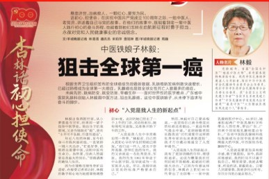
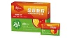

广东省中医院新闻
庆祝建党百年·杏林话初心担使命 | “铁娘子”林毅：狙击全球第一癌...
点击查看详情
2021-07-01

健康报新闻
金蓉颗粒（原名消癖颗粒），新分类一类创新药预防乳腺癌机制被揭示...
点击查看详情
2019-03-25
广东省中医院新闻
“第四届林毅学术思想和临床经验传承学习班”──金蓉颗粒首届产品培训会成功在广州举办...
点击查看详情
2019-03-25
广东省中医院新闻
全国名中医、广东省中医院林毅教授治疗乳腺增生病验方开发项目取得突破：中药创新药金蓉颗粒获批上市...
点击查看详情
2019-01-04